第5章
流体密度和压力；流体静力学
流体定义
流体是这样一种物体，它的各部分能屈服于作用于其上的力，而且这种屈服能使它们相互间轻易地发生运动。
命题19 定理14
盛装在任意静止容器内的均匀而静止并且在各方向上都受到压迫的流体的各部分（不考虑凝聚力、重力以及一切向心力），在各方面上都受到相等的压力，停留在各自的处所，不会因该压力而产生运动。
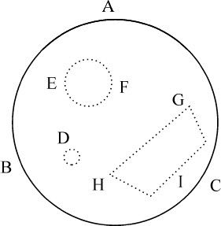
情形1．令流体盛装于球形容器ABC内，各方面均匀受到压迫：则该压力不会使流体的任何部分运动。因为，如果任意部分D运动，则各边上到球心距离相等的类似部分必定都在同时也作类似的运动；因为它们所受到的压力都是相似而且相等的；而不是由于这种压力而产生的运动都是不可能的。而如果这些部分都向中心附近运动，则流体必定向球心集聚，这与题设矛盾，如果它们远离球心而去，则流体必定向球面集聚，这也与题设矛盾。它们不能向任何方向运动，只能保持其到中心的不变距离，因为相同的理由可以使它们向相反方向运动；而同一部分不可能同时向相反的两个方向运动，所以流体的各部分都不会离开其处所。
证毕。
情形2．该流体的所有球形部分在各方向上都受到相等的压力。因为令EF为流体的球体部分；如果它不是受到各方面相等的压力，则压力较小方面会增加压力直到各方面压力相等；而该部分（由情形1）将停留在其位置上。但在压力增加之前，它们不会离开原先的位置（由情形1）；而由流体定义，增加新的压力后它们将会由这些位置运动。这两个结论相互矛盾。所以球体EF各方向上受不等压力的说明是错误的。
证毕。
情形3．此外，球的不同部分的压力也相等。因为球体毗邻部分在接触点相互施加相等的压力（由第三定律）。但（由情形2）它们向各方面都施以相同的压力。所以球体的任意两个不毗邻的部分，由于能与这二者都接触的中介部分的作用，相互间也施以相等的压力。
证毕。
情形4．流体的所有部分处处压力相等。因为任意两个部分都与球体的某些点保持接触；它们对这些球体部分的压力相等（由情形3），因而受到的反作用也相等（由定律Ⅲ）。
证毕。
情形5．由于流体的任意部分GHI被封闭在流体的其余部分内，如同盛装在容器中一样，对各方面的压力相等，而且它的各部分也相互间同等压迫，因而相互间维持静止；所以说流体的所有部分GHI向各方面施加压力，相互间也同等地压迫，而且相互间保持静止。
证毕。
情形6．如果流体盛装在一个屈服物质或非刚体的容器中，且各方面压力不相等，则由流体定义，容器也将向较大的压力屈服。
情形7．所以，在非流动的或刚体容器中，流体不会向一个方向维持较其他方向更大的压力，而是在短时间内向它屈服；因为容器的刚性边壁不会随流体一同屈服，而屈服的流体会压迫容器的对边，这样各方面的压力趋于相等。而因为流体一旦屈服于压力较大的部分而运动，即受到容器对面边壁阻力的抗衡，使一瞬间各方面的压力变为相等，不发生局部运动；由此知，流体的各部分（由情形5）相互间同等压迫，维持静止。
证毕。
推论．所以流体各部分相互之间的运动不可能由于外表面所传递的压力而有所改变，除非该表面的形状发生改变，或由于流体所有各部分间相互压力较强或较弱，使它们相互间的滑移有或多或少的困难。
命题20 定理15
如果球形流体的所有部分在到球心距离相等时是均匀的，置于一同心的瓶上，都被吸引向球心，则该瓶所承受的是一个柱体的重量，其底等于球的表面，而高度则等于覆盖的流体。
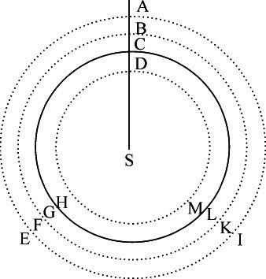
令DHM为瓶的表面，AEI为流体的上表面。把流体分为等厚度的同心球壳，相应的是无数个球面BFK，CGL等等；设重力只作用于每个球壳的外表面，而且对球面上相等的部分作用相等。因而上表面AEI只受到其自身重力的作用，这个力使上表面的所有部分，以及第二个表面BFK（由命题19），根据其大小而受到相等的压力。类似地，第二个表面BFK也受到其自身的重力作用，该力叠加在前一种力上使压力加倍。而第三个表面CGL则根据该力的大小，在其自身重力之外又受到这一压力的作用，使它的压力增为三倍。用类似的方法，第四个表面的压力是四倍，第五个表面的压力是五倍，以此类推。所以作用于每个表面的压力并不正比于上层流体的体积量，而是正比于到达流体上表面的层数；等于最低层乘以层数；即，等于一个体积的重量，它与上述柱体的最后的比（当层数无限增加，层厚无限减小，使由下表面到上表面的重力作用变得连续时）是相等的比。所以，下表面承受着上述柱体的重量。
证毕。
由类似理由，流体的重力按到中心的距离的任意给定比率减小，以及流体的上部稀薄，而下部稠密，都是本命题的明证。
证毕。
推论Ⅰ．瓶并未受到其上的流体全部重量的压力，只承受本命题中所述的那一部分压力；其余压力为球形流体的拱曲表面所承受。
推论Ⅱ．压力的量在到中心距离相等处总是相等的，不论表面受到的力是平行于地平面，或是垂直于它，与它斜向相交。也不论流体是由受压表面沿直线向上涌出，或是自蜿蜒曲折的洞穴和隧道斜向流出，也不论这些通道是规则或不规则的，是宽是窄。这些条件不能使压力有任何改变，这可以由将本定理应用到若干种流体的情形得到证明。
推论Ⅲ．由同一证明还可以推出（由命题19），重流体各部分自身相互间不会因为其上部重量的压力而运动，因凝聚而产生的运动除外。
推论Ⅳ．如果一个比重相同又不会压缩的另一个物体没入流体中，它将不会因其上部的重量而发生运动：它既不下沉也不上浮，外形也不改变。如果它是球体，尽管有此压力它仍保持球形，如果它是立方体，则仍保持立方体，不论它是柔软的或是流体的，也不论它是在该流体中自由游动或沉入底部。因为流体内部各部分与没入其中的部分状态相同；而具有相同的尺度、外形和比重的没入物体，其情形都与此相似。如果没入的物体保持其重量，分解而转变成流体，则这个物体如果原先是上浮的、下沉的，或受某种压力变为新形状的，都将类似地仍然上浮、下沉或变为新形状；这是因为其重力和其运动的其他原因得以维持。但是（由命题19，情形5）它现在应是静止的，保持其原形。所以与上一种情形相同。
推论Ⅴ．如果物体的比重大于包围着它的流体，它将下沉；而比重较轻的则上浮，所获得的运动和外形变化正比于其重力所出超或不足部分。因为出超或不足的部分其效果等同于一个冲击，它可以使与流体各部分取得的平衡受到作用；这与天平一边的重量增减的情形相类似。
推论Ⅵ．所以在流体内的物体有两种重力：其一是真实和绝对的，另一种是表象的，普通的和相对的。绝对重力是使物体竖直向下的全部的力；相对和普通的重力是重力的超出部分，它使物体比周围的流体更强烈地竖直向下。第一种重力使流体和物体的所有部分被吸引在适当的处所；所以它们的重力合在一起即构成总体的重量。因为全体合在一起就是重量，正如盛满液体的容器那样；全体的重量等于所有部分的重量的和，是由所有部分组成的。另一种重力并不使物体被吸引在其处所；即，通过相互比较，它们并不超出，但阻碍相互的下沉倾向，使其像没有重量那样滞留在原处。空气中的比空气轻的物体，一般被认为是没有重量的。而重于空气的物体通常是有重量的，因为它们不能为空气的重量所承担。普通重量无非是物体的重量超出空气重量的部分。因而没有重量的物体，一般也称为轻物体，它们轻于空气，被向上托起，但这只是相对地轻，不是真实的，因为它们在真空中仍是下沉的。同样，在水中，物体由其重量决定下沉或上浮，相对地表现出重或是轻；它们相对的、表象的重或轻正是它们的真实重量超出或不足于水的重量的部分。不过那些重于流体而不下沉，轻于流体而不上浮的物体，虽然它们的真实重量增加了总体重量，但一般而言，它们在水中没有相对重量。这些情形可以作类似的证明。
推论Ⅶ．已证明的结论适用于与所有其他向心力有关的场合。
推论Ⅷ．所以，如果介质受到其自重或任意其他向心力的作用，在其中运动的物体受到同一种力的更强烈的作用；则二种力的差正是运动力，在前述命题中，我都称之为向心力。但如果该物体受此力作用较轻，则力的差变为离心力，而且只能按离心力来处理。
推论Ⅸ．但是，由于流体的压力不改变没入其中的物体的形状，因而（由命题19推论）也不改变其内部各部分相互间的位置关系；因而，如果动物没入流体中，而且所有的知觉是由各部分的运动产生的，则流体既不伤害浸入的躯体，也不刺激任何感觉，除非躯体受到压迫而蜷缩。所有为流体所包围的物体系统都与此情形相同。系统的所有部分都像在真空中一样受到同一种运动的推动，只保留相对重量；除非流体或多或少地阻碍它们的运动，或在压力下被迫与之结合。
命题21 定理16
令任意流体的密度正比于压力，其各部分受反比于到中心距离平方的向心力的吸引竖直向下：则如果该距离是连续正比的，则在相同距离处的流体密度也是连续正比的。
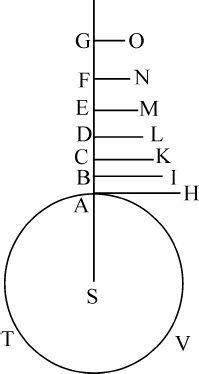
令ATV表示流体的球形底面，S是球心，SA，SB，SC，SD，SE，SF等等是连续正比的距离。作垂线AH，BI，CK，DL，EM，FN等等，正比于A，B，C，D，E，F处的介质密度；则这些处所的比重正比于
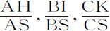
等，或者完全等价地，正比于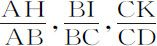
等。首先设这些重力由A到B，由B到C，由C到D等等都是均匀的连续的，而在点B，C，D等处形成减量台阶。将这些重力乘以高度AB，BC，CD等即得到压力AH，BI，CK等等，它们作用于底ATV（由定理15）。所以，部分A承受着AH，BI，CK，DL等直至无限的所有压力；部分B承受着除第一层AH以外的所有压力；而部分C承受着除前二层以外的所有压力；以此类推：所以第一部分A的密度AH比第二部分B的密度BI，等于AH＋BI＋CK＋DL等等所有无限多项的和比BI＋CK＋DL等等所有无限多项的和。而第二部分B的密度BI比第三部分C的密度CK，等于BI＋CK＋DL＋……的和比CK＋DL＋……的和。所以这些和正比于它们的差AH，BI，CK等等，因而是连续正比的。而由于在处所A，B，C等的密度正比于AH，BI，CK等，它们也是连续正比的。间隔地取值，在连续正比的距离SA，SC，SE处，密度AH，CK，EM也连续正比。由类似理由，在连续正比的任意距离SA，SD，SG处，密度AH，DL，GO也是连续正比的。现在令A，B，C，D，E等点重合，使由底A到流体顶部的比重级数变为连续的，则在连续正比的任意距离SA，SD，SG处，相应也连续正比的密度AH，DL，GO仍将维持连续正比。证毕。
推论．如果A，E两处的流体密度为已知，则可以求出任意其他处所Q的密度。以S为中心，关于直角渐近线SQ，SX作双曲线与垂线AH，EM，QT相交于a ，e 和q ，与渐近线SX的垂线HX，MY，TZ相交于h ，m 和t 。作面积Ymt Z比已知面积Ymh X等于给定面积Eeq Q比给定面积Eea A；延长直线Zt 截取线段QT正比于密度。因为，如果直线SA，SE，SQ是连续正比的，则面积Eeq Q，Eea A相等，而与它们正比的面积Ymt Z，Xhm Y也相等；而直线SX，SY，SZ，即AH，EM，QT连续正比，如它们所应当的那样，如果直线SA，SE，SQ按其他次序成连续正比序列，则由于正比的双曲线面积，直线AH，EM，QT也按相同的次序构成连续正比序列。
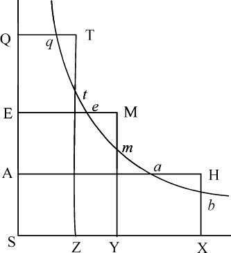
命题22 定理17
令任意流体的密度正比于压力，其各部分受反比于到中心距离平方的重力作用而竖直向下：则如果按调和级数取距离，在这些距离上的流体密度构成几何级数。
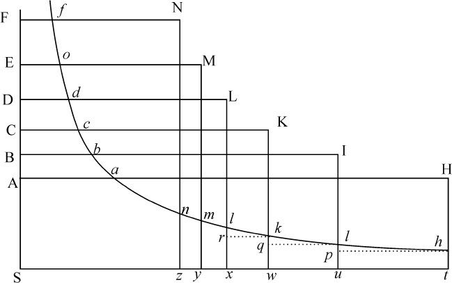
令S为中心，SA，SB，SC，SD，SE为按几何级数取的距离。作垂线AH，BI，CK等等。它们都正比于A，B，C，D，E等处的流体密度，而对应的比重则正比于
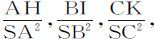
等等。设这些重力是均匀连续的，第一个由A到B，第二个由B到C，第三个由C到D，等等，它们乘以高度AB，BC，CD，DE等等，或者，等价地，乘以距离SA，SB，SC，等等，正比于这些高度，则得到表示压力的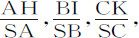
等等，所以，由于密度正比于这些压力的和，则密度的差AH－BI，BI－CK等正比于这些和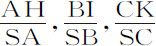
的差。以S为中心，SA，Sx 为渐近线，画任意双曲线，与垂线AH，BI，CK等相交于a ，b ，c 等，作于渐近线Sx 上的与垂线Ht ，Iu ，Kw 相交于h ，i ，k ；则密度的差tu ，uw 等将正比于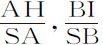
等，即正比于Aa ，Bb 等。因为，由双曲线的特性，SA比AH或St 等于th 比Aa ，因而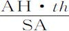
等于Aa 。由类似理由，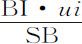
等于Bb ，等等。但Aa ，Bb ，Cc 等是连续正比的，因而也正比于它们的差Aa －Bb ，Bb －Cc 等等，所以矩形tp ，uq 等等也正比于这些差；也正比于矩形的和tp ＋uq 成tp ＋uq ＋ur 与差Aa －Cc 或Aa －Dd 的和的比。设这些项中的若干个与所有差的和，如Aa －Ff ，正比于所有矩形zthn 的和。无限增加项数，减小点A，B，C等之间的距离，则这些矩形等于双曲线面积zthn ，因而差Aa －Ff 正比于该面积。现取按调和级数取任意距离SA，SD，SF，则差Aa －Dd ，Dd －Ff 相等；所以面积thlx ，xlnz 正比于这些差，而且相互相等，而密度St ，Sx ，Sz ，即AH，DL，FN则连续正比。证毕。
推论．如果已知流体的两个密度AH，BI，则可以求出对应于其差tu 的面积thiu ；因而取面积thnz 比该已知面积thiu 等于差Aa －Ff 比差Aa －Bb ，即可以求出任意高度SF的密度FN。
附注
由类似理由可以证明，如果流体各部分的重力正比于到中心距离的立方，反比于距离SA，SB，SC等等的平方（即，
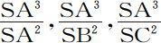
）减小，并按算术级数取值，则密度AH，BI，CK等构成几何级数。而如果重力正比于距离的四次幂，反比于距离的立方（即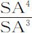
，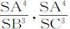
）等，按算术级数取值，则密度AH，BI，CK等等也构成几何级数。以此类推可至无限。而且，如果流体各部分的重力在所有距离处都是相同的，距离为算术级数，则密度也是几何级数，正如哈雷博士所发现的那样。如果重力正比于距离，而距离的平方为算术级数，则密度仍是几何级数。以此类推可至无限。当流体因压迫而集聚，其密度正比于压迫力；或者，等价地，当流体所占据的空间反比于这个力时，上述情形均成立。还可以设想一些其他的凝聚规律，如凝聚力的立方正比于密度的四次幂，或力的比值的立方等于密度比值的四次幂：在此情形下，如果重力反比于到中心距离的平方，则密度反比于距离的立方。设压力的立方正比于密度的五次幂；如果重力反比于距离的平方，则密度反比于距离的3/2次幂。设压力正比于密度的平方，重力反比于距离的平方，则密度反比于距离。但就我们的空气而言，这个关系取自实验，它的密度精确地，至少是极为近似地正比于压力；因而地球大气中的空气密度正比于上面全部空气的重量，即，正比于气压计中的水银高度。命题23 定理18
如果流体由相互离散的粒子组成，密度正比于压力，则各粒子的离心力反比于它们中心之间的距离。反之，如果各粒子是相互离散的，离散力反比于它们中心间的距离的平方，则由此组成的弹性流体，其密度正比于压力。
设流体贮存于立方空间ACE中，然后被压缩入较小的立方空间ace ；在这两个空间中各粒子维持着相似的相互位置关系，距离正比于立方的边AB，ab ；而介质的密度反比于包含的空间AB3 ，ab 3 。在大立方体ABCD的平面边取一平方形DP等于小立方体的平面边db ；由题设知，平方形DP压迫其内部流体的压力，比平方形db 压迫其内部流体的压力，等于两种介质相互间的比，即等于ab 3 比AB3 。但平方形DB压迫其内部流体的压力比平方形DP压迫其内部相同流体的压力，等于平方形DB比平方形DP，即等于AB2 比ab 2 。所以两式的对应项相乘，平方形DB压迫流体的压力比平方形db 压迫其内部流体的压力等于ab 比AB。作平面FGH，fgh 通过两个立方体的内部，把流体分为两部分。这两部分相互间的压力等于它们受到平面AC，ac 的压力，即相互比值等于ab 比AB：因而承受该压力的离心力也有相同比值。在两个立方空间中，被平面FGH，fgh 隔开的粒子数目相同，位置相似，所有的粒子产生的作用于全体的力正比于各粒子间相互作用的力。所以在大立方体中被平面FGH隔开的各粒子间的作用力，比在小立方体中被平面fgh 隔开的各粒子间的作用力，等于ab 比AB，即，反比于各粒子之间的距离。
证毕。
反之，如果某一粒子的力反比于距离，即反比于立方体的边AB，ab ；则力的和也为相同比值，而边DB，db 的压力正比于力的和；因而平方形DP的压力比边DB的压力等于ab 2 比AB2 。将比例式中对应项相乘，得到平方形DP的压力比边db 的压力等于ab 3 比AB3 ；即，在一个中的压力比在另一个中的压力等于前者的密度比后者的密度。
证毕。
附注
由类似理由，如果各粒子的离心力反比于中心之间距离的平方，则压力的立方正比于密度的四次幂。如果离心力反比于距离的三次或四次幂，则压力的立方正比于密度的五次或六次幂。一般地，如果D是距离，E是受压流体的密度，离心力反比于距离的任意次幂D n ，其指数为n ，则压力正比于幂E n ＋2 的立方根，其幂指数为n ＋2；反之亦然。所有这些要求离心力仅发生于相邻接的粒子之间，或相距不远者，磁体提供了一个这方面的例子。磁体的力会因为间隔的铁板而减弱，几乎终止于该铁板：因为远处的物体受磁体的吸引不如受铁板的吸引强，参照此方法，各粒子排斥与它同类型的邻近粒子，而对较远处的则无作用，则这种粒子所组成的流体与本命题所讨论的流体相同。如果粒子的力向所有方向无限扩散，则要构成具有相同密度的较大量的流体，需要更大的凝聚力。但弹性流体究竟是否由这种相互排斥的粒子组成，这是个物理学问题。我们在此只对由这种粒子组成的流体的性质做出证明，哲学家们不妨对这个问题作一讨论。
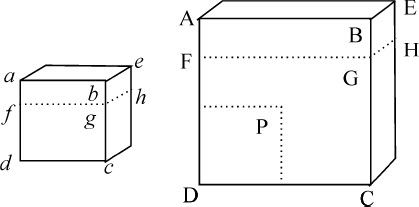